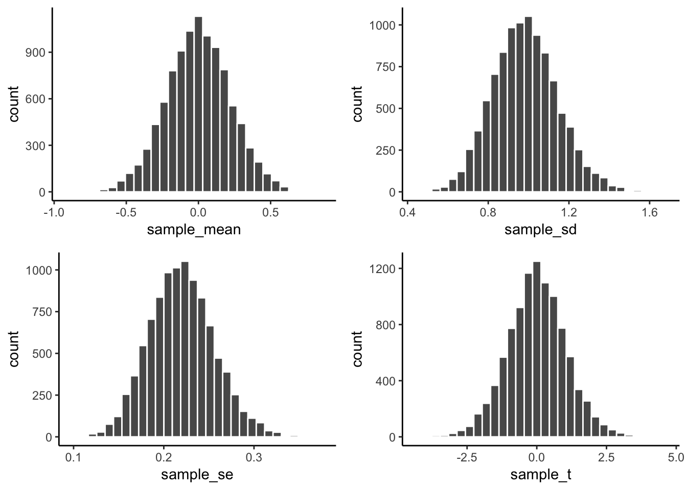
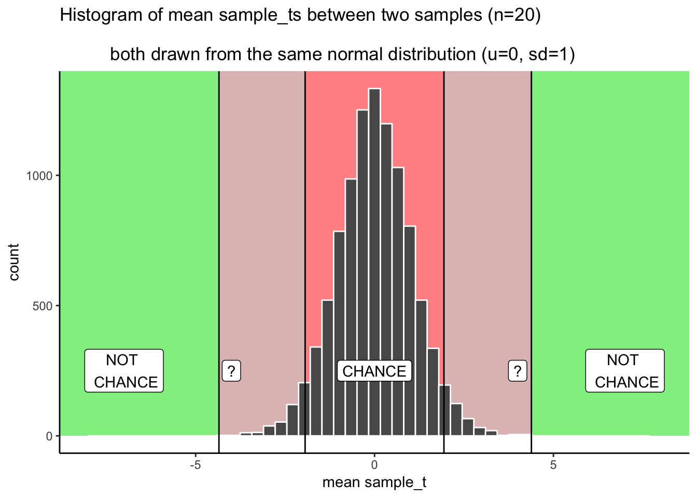
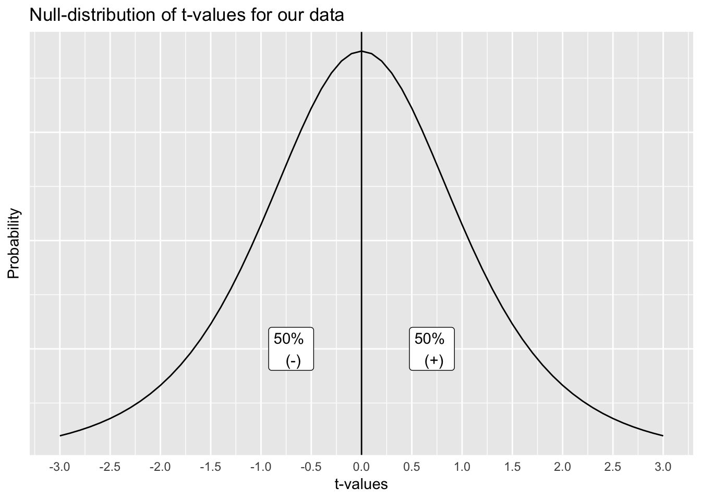
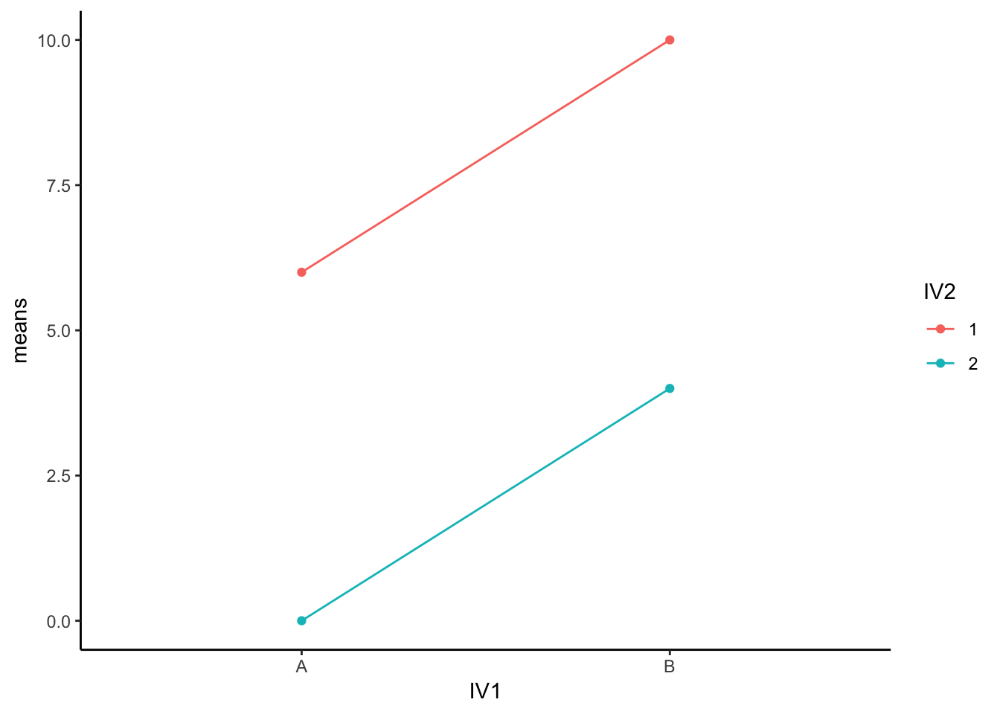
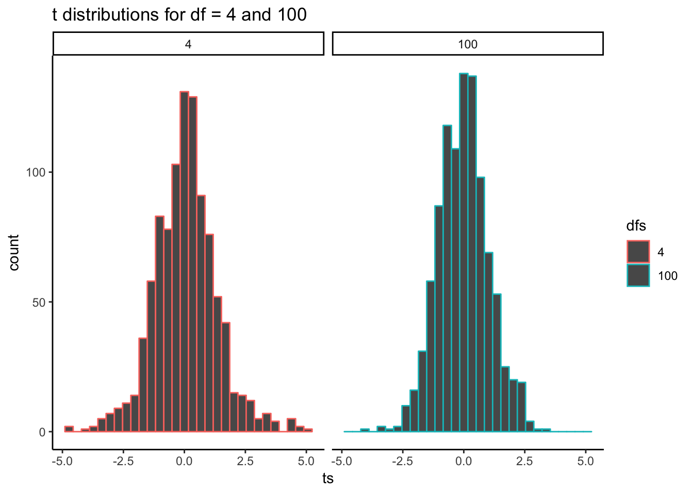

Chapter 5 t-Tests
One day, many moons ago, William Sealy Gosset got a job working for Guinness Breweries. They make that really dark and famous Irish beer called Guinness. What happens next went something like this (total fabrication, but mostly on point).
Guinness wanted all of its beers to the best beers. No mistakes, No bad beers. They wanted to improve their quality control, so that wherever you pour a Guiness, anywhere in the world, it always comes out just fantastic, let’s say 5 stars out of 5 every time. They want to be the best.
Guiness had some beer tasters, who were super-experts. Everytime they tasted a Guiness from the factor that wasn’t 5 out of 5, they knew right away.
But, Guiness had a big problem. They would make a keg of beer, and they would want to know if every single pint that would come out would be a 5 out of 5. So, the beer tasters drank pint after pint out of the keg, until it was gone. Some kegs were all 5 out of 5s. Some weren’t, Guiness needed to fix that. But, the biggest problem was that, after the testing, there was no beer left to sell, the testers drank it all (remember I’m kind of making this part up to illustrate a point, they probably still had beer to sell).
Guiness had a sampling and population problem. They wanted to know that the entire population of the beers they made were all 5 out of 5 stars. But, if they sampled the entire population, they would drink all of their beer, and wouldn’t have any left to sell.
Enter William Sealy Gosset. Gosset figured out the solution to the problem. He asked questions like this:
- How many samples do I really need to take to know the whole population is 5 out of 5?
- What’s the fewest amount of samples I need to take to know the above, that would mean Guiness could test fewer beers for quality, and sell more beers for profit, and making the product testing time shorter.
Gosset solved those questions, and he invented something called the Student’s t-test. Gosset was working for Guinness, and could be fired for releasing trade-secrets that he invented (the t-test). But, Gosset published the work anyways, under a pseudonym. He called himself Student, hence Student’s t-test. Now you know the rest of the story.
It turns out this was a very nice thing for Gosset to have done. t-tests are used all the time, and they are useful, that’s why they are used. In this chapter we learn how they work.
You’ll be surprised to learn that what we’ve already talked about, (the Crump Test, and the Randomization Test), are both very very similar to the t-test. So, in general, you have already been thinking about the things you need to think about to understand t-tests. You’re probably wondering what is this \(t\), what does \(t\) mean? We will tell you. Before we tell what it means, we first tell you about one more idea.
5.1 Check your confidence in your mean
We’ve talked about getting a sample of data. We know we can find the mean, we know can find the standard deviation. We know we can look at the data in a histogram. These are all useful things to do for us to learn something about the properties of our data.
You might be thinking about these things, like mean and standard deviation, as very different things. The mean is about central tendency (where most of the data is), and the standard deviation is about variance (where most of the data isn’t). Yes, they are different things, but we can use them together to create useful new things.
What if I told you my sample mean was 50, and I told you nothing else about my sample. Would you be confident that most of the numbers were near 50? Would you wonder if there was a lot of variability in the sample, and many of the numbers were very different from 50. You should wonder all of those things. The mean alone, just by itself, doesn’t tell you anything about how confident you should be that the number represents all of the numbers in the sample.
It could be a representative number, when the standard deviation is very small, and all the numbers are close to 50. It could be a non-representative number, when the standard deviation is large, and many of the numbers are not near 50. You need to know the standard deviation in order to be confident in how well the mean represents the data.
How can we put the mean and the standard deviation together, to give us a new number that tells us about confidence in the mean?
We can do this using a ratio:
\(\frac{mean}{\text{standard deviation}}\)
Think about what happens here. We are dividing a number by a number. Look at what happens:
\(\frac{number}{\text{same number}} = 1\)
\(\frac{number}{\text{smaller number}} = \text{big number}\)
compared to:
\(\frac{number}{\text{bigger number}} = \text{smaller number}\)
Imagine we have a mean of 50, and a truly small standard deviation of 1. What do we get with our formula?
$ = 50 $
Imgaine we have a mean of 50, and a big standard deviation of 100. What do we get with our formula?
$ = 0.5 $
Notice, when we have a mean paired with a small standard deviation, our formula gives us a big number, like 50. When we have a mean paired with a large standard deviation, our formula gives us a small number, like 0.5. These numbers can tell us something about confidence in our mean, in a general way. We can be 50 confident in our mean in the first case, and only 0.5 (not at a lot) confident in the second case.
What did we do here? We created a descriptive statistic by dividing the mean by the standard deviation. And, we have a sense of how to interpet this number, when it’s big we’re more confident that the mean represents all of the numbers, when it’s small we are less confident. This is a useful kind of number, a ratio between what we think about our sample (the mean), and the variability in our sample (the standard deviation). Get used to this idea. Almost everything that follows in this textbook is based on this kind of ratio. We will see that our ratio becomes different kinds of “statistics”, and the ratios will look like this in general:
\(\text{name of statistic} = \frac{\text{measure of what we know}}{\text{measure of what we don't know}}\)
or, to say it using different words:
\(\text{name of statistic} = \frac{\text{measure of effect}}{\text{measure of error}}\)
In fact, this is the general formula for the t-test. Big surprise!
5.2 One-sample t-test: A new t-test
Now we are ready to talk about t-test. We will talk about three of them. We start with the one-sample t-test.
Commonly, the one-sample t-test is used to estimate the chances that your sample came from a particular popualtion. Specifically, you might want to know whether the mean that you found from your sample, could have come from a particular population having a particular mean.
Straight away, the one-sample t-test becomes a little confusing (and I haven’t even described it yet). Offically, the uses known parameters from the population, like the mean of the population and the standard deviation of the population. However, most times you don’t know those parameters of the population! So, you have to estimate them from your sample. Remember, from the chapter on descriptive statistics, our sample mean is an unbiased estimate of the population mean. And, our sample standard deviation (the one where we divide by n-1) is an unbiased estimate of the population standard deviation. When Gosset developed the t-test, he recognized that he could use these estimates from his samples, to make the t-test. Here is the formula for the one sample t-test, we first use words, and then become more specific:
5.2.1 Formulas for one-sample t-test
\(\text{name of statistic} = \frac{\text{measure of effect}}{\text{measure of error}}\)
\(\text{t} = \frac{\text{measure of effect}}{\text{measure of error}}\)
\(\text{t} = \frac{\text{Mean difference}}{\text{standard error}}\)
\(\text{t} = \frac{\bar{X}-u}{S_{\bar{X}}}\)
\(\text{t} = \frac{\text{Sample Mean - Population Mean}}{\text{Sample Standard Error}}\)
\(\text{Estimated Standard Error} = \text{Standard Error of Sample} = \frac{s}{\sqrt{N}}\)
Where, s is the sample standard deviation.
Some of you may have gone cross-eyed looking at all of this. Remember, we’ve seen it before when we divided our mean by the standard deviation in the first bit. The t-test is just a measure of a sample mean, divided by the standard error of the sample mean. That is it.
5.2.2 What does t represent?
\(t\) gives us a measure of confidence, just like our previous ratio for dividing the mean by a standard deviations.
What does the t in t-test stand for? Apparently nothing. Gosset originally labelled it z. And, Fisher later called it t, perhaps because t comes after s, which is often used for the sample standard deviation.
\(t\) is a property of the data that you collect. You compute it with a sample mean, and a sample standard error (there’s one more thing in the one-sample formula, the population mean, which we get to in a moment). This is why we call \(t\), a sample-statistic. It’s a statistic we compute from the sample.
What kinds of numbers should we expect to find for these \(ts\)? Well, wouldn’t that depend on a lot of things, how could we know that?
Let’s start small, and work through some examples. Imagine your sample mean is 5. You want to know if it came from a population that also has a mean of 5. In this case, what would t be? It would be zero, because we first subtract sample mean from the population mean, 5-5=0. So, t can be zero, when there is no difference.
Let’s say you take another sample, do you think the mean will be 5 every time, probably not. Let’s say the mean is 6. So, what can t be here? It will be a positive number, because 6-5= +1. But, will t be +1? That depends on the standard error of the sample. If the standard error of the sample is 1, then t could be 1, because 1/1 = 1.
If the sample standard error is smaller than 1, what happens to \(t\)? It get’s bigger right? For example, 1 divided by 0.5 = 2. If the sample standard error was 0.5, t would be 2. And, what could we do with this information? Well, it be like a measure of confidence. As t get’s bigger we could be more confident in the mean difference we are measuring.
Can \(t\) be smaller than 1? Sure, it can. If the sample standard error is big, say like 2, then \(t\) will be smaller than one (in our case), e.g., 1/2 = .5. The direction of the difference between the sample mean and population mean, can also make the \(t\) become negative. What if our sample mean was 4. Well, then \(t\) will be negative, because the mean difference in the numerator will be negative, and the number in the bottom (denominator) will always be positive (remember why, it’s the standard error, computed from the sample standard deviation, which is always positive because of the squaring that we did.).
So, that is some intutions about what the kinds of values t can take. \(t\) can be positive or negative, and big or small. Fine then, what can we do with this?
5.2.3 Calculating t from data
Let’s briefly calculate a t-value from a small sample. Let’s say we had 10 students do a true/false quiz 5 questions on it. There’s a 50% chance of getting each answer correct.
Every student completes the 5 questions, we grade them, and then we find their performance (mean percent correct). Want we want to know is whether the students were guessing. If they were all guessing, then the sample mean should be about 50%, it shouldn’t be different from chance, which is 50%. Let’s look at the table:
| students | scores | mean | Difference_from_Mean | Squared_Deviations |
|---|---|---|---|---|
| 1 | 50 | 61 | -11 | 121 |
| 2 | 70 | 61 | 9 | 81 |
| 3 | 60 | 61 | -1 | 1 |
| 4 | 40 | 61 | -21 | 441 |
| 5 | 80 | 61 | 19 | 361 |
| 6 | 30 | 61 | -31 | 961 |
| 7 | 90 | 61 | 29 | 841 |
| 8 | 60 | 61 | -1 | 1 |
| 9 | 70 | 61 | 9 | 81 |
| 10 | 60 | 61 | -1 | 1 |
| Sums | 610 | 610 | 0 | 2890 |
| Means | 61 | 61 | 0 | 289 |
| sd | 17.92 | |||
| SEM | 5.67 | |||
| t | 1.94003527336861 |
You can see the column column has all of the test scores for each of the 10 students. We did the things we need to do to compute the standard deviation.
Remember the sample standard deviation is the square root of the sample variance, or:
\(\text{sample standard deviation} = \sqrt{\frac{\sum_{i}^{n}({x_{i}-\bar{x})^2}}{N-1}}\)
\(\text{sd} = \sqrt{\frac{2890}{10-1}} = 17.92\)
The standard error of the mean, is the standard deviation divided by the square root of N
$ = = = 5.67 $
\(t\) is the difference between our sample mean (61), and our population mean (50, assuming chance), divided by the standard error of the mean.
\(\text{t} = \frac{\bar{X}-u}{S_{\bar{X}}} = \frac{\bar{X}-u}{SEM} = \frac{61-50}{5.67} = 1.94\)
And, that is you how calculate \(t\), by hand. It’s a pain. I was annoyed doing it this way. In the lab, you learn how to calculate \(t\) using software, so it will just spit out \(t\). For example in R, all you have to do is this:
t.test(scores, mu=50)##
## One Sample t-test
##
## data: scores
## t = 1.9412, df = 9, p-value = 0.08415
## alternative hypothesis: true mean is not equal to 50
## 95 percent confidence interval:
## 48.18111 73.81889
## sample estimates:
## mean of x
## 615.2.4 How does \(t\) behave?
If \(t\) is just a number that we can from our sample (it is), what can we do with it? How can we use \(t\) for statistical inference?
Remember back to the chapter on sampling and distributions, that’s where we discussed the sampling distribution of the sample mean. Remember, we made a lot of samples, then computed the mean for each sample, then we plotted a histogram of the sample means. Later, in that same section, we mentioned that we could generate sampling distributions for any statistic. That, for each sample, we could compute the mean, the standard deviation, the standard error, and now even \(t\), if we wanted to. We could generate 10,000 samples, and draw four histograms, one for each sampling distribution for each statistic.
This is exactly what I did, and the results are shown in the four figures below. I used a sample size of 20, and drew random observations for each sample from a normal distribution, with mean = 0, and standard deviation = 1. Let’s look at the sampling distributions for each of the statistics. \(t\) was computed assuming with the population mean assumed to be 0.

We see four sampling distributions. This is how statistical summaries of these summaries behave. We have used the word chance windows before. These are four chance windows, measuring different aspects of the sample. In this case, all of the samples came from the same normal distribution. Because of sampling error, each sample is not identical. The means are not identical, the standard deviations are not identical, sample standard error of the means are not identical, and the \(t\)s of the samples are not identical. They all have some variation, as shown by the histograms. This is how samples, of size 20 behave.
We can see straight away, that in this case, we are unlikely to get a sample mean of 2. That’s way outside the window. The range for the sampling distribution of the mean is around -.5 to +.5, and is centered on 0 (the population mean, would you believe!).
We are unlikely to get sample standard deviations of between .6 and 1.5, that is a different range, specific to the sample standard deviation.
Same thing with the sample standard error of the mean, the range here is even smaller, mostly between .1, and .3. You would rarely find a sample with a standard error of the mean greater than .3. Virtually never would you find one of say 1 (for this situation).
Now, look at \(t\). It’s range is basically between -3 and +3 here. 3s barely happen at all. you pretty much never see a 5 or -5 in this situation.
All of these sampling windows are chance windows, and they can all be used in the same way as we have used similar sampling distributions before (e.g., Crump Test, and Randomization Test) for statistical inference. For all of them we would follow the same process:
- Generate these distributions
- Look at your sample statistics for the dat you have (mean, sd, sem, and \(t\))
- Find out how likely each value (or greater than that value) is
- Obtain that probability
- See if you think your sample statistics were probable or improbable.
We’ll formalize this in a second. I just want you to know that what you will be doing is something that you have already done before. For example, in the Crump test and the Randomization test we focused on the distribution of mean differences. We could do that again here, but instead, we will focus on the distribution of \(t\) values. We then apply the same kinds of decision rules to the \(t\) distribution, as we did for the other distributions. Below you will see a graph you have already seen, except this time it is a distribution of \(t\)s, not mean differences:
Remember, if we obtained a single \(t\) from one sample we collected, we could consult this chance window below to find out the \(t\) we obtained from the sample was likely or unlikely to occur by chance.

5.2.5 Making a decision
From our early example involving the TRUE/FALSE quizzes, we are not ready to make some kind of decision about what happended there. We found a mean difference of 11. We found a \(t\) = 1.9411765. The probability of this \(t\) or larger occuring is \(p\) = 0.0841503. We were testing the idea that our sample mean of 61 could have come from a normal distribution with mean = 50. The \(t\) test tells us that the \(t\) for our sample, or a larger one, would happen with p = 0.0841503. In other words, chance can do it a kind of small amount of time, but not often. In english, this means that all of the students could have been, guessing, but it wasn’t that likely that were just guessing.
We’re guessing that you are still a little bit confused about \(t\) values, and what we are doing here. We are going to skip ahead to the next \(t\)-test, called a paired samples t-test. We will also fill in some more things about \(t\)-tests that are more obvious when discussing paired samples t-test. In fact, spoiler alert, we will find out that paired samples t-test is actually a one-sample t-test in disguise (WHAT!), yes it is. If the one-sample \(t\)-test didn’t make sense to you, read the next section.
5.3 Paired-samples \(t\)-test
For me (Crump), many analyses often boil down to a paired samples t-test. It just happens that many things I do reduce down to a test like this.
I am a cognitive psychologist, I conduct research learn how people do things like remember, pay attention, and learn skills. There are lots of Psychologists like me, who do very similar things.
We all often conduct the same kinds of experiments. They go like this, and they are called repeated measures designs. They are called repeated measures designs, because we measure how one person does something more than once, we repeat the measure.
So, I might measure somebody doing something in condition A, and measure somebody doing something in Condition B, and then I see that same person does different things in the two conditions. I repeatedly measure the same person in both conditions. I am interested in whether the experimental manipulation changes something about how people perform the task in question.
5.3.1 Mehr, Song, and Spelke (2016)
We will introduce the paired-samples t-test with an example using real data, from a real study. Mehr, Song, and Spelke (2016) were interested in whether singing songs to infants helps infants become more sensitive to social cues. For example, infants might need to learn to direct their attention toward people, as a part of learning how to interact socially with people. Perhaps singing songs to infants aids this process of directing attention. When an infant hears a familiar song, they might start to pay more attention to the person singing that song, even after they are done singing the song. The person who sang the song, might become more socially important to the infant. You will learn more about this study in the lab for this week. This example, prepares you for the lab activities. Here is a brief summary of what they did:
First, parents were trained to sing a song to their infants. After many days of singing this song to the infants, the parent came into the lab with their infants. In the first session, parents sat with their infants on their knees, so the infant could watch two video presentations. There were two videos. Each video involved two unfamiliar new people the infant had never seen before. Each new person in the video (the singers) sang one song to the infant. One singer sang the “familiar” song the infant had learned from their parents. The other singer sang an “unfamiliar” song the infant had not hear before.
There were two really important measurement phases, the baseline phase, and the test phase. The baseline phase occured before the infants saw and heard each singer sing a song. During the baseline phase, the infants watched a video of both singers at the same time. The researchers recorded the proportion of time that the infant looked at each singer. The baseline phase was conducted to determine whether infants had a preference to look at either person (who would later sing them a song).
The test phase occurred after infants saw and heard each song, sung by each singer. During the test phase, each infant had an opportunity to watch silent videos of both singers. The researchers measured the proportion of time the infants spent looking at each person. The question of interest, was whether the infants would spend a greater proportion of time looking at the singer who sang the familiar song, compared to the singer who sang the unfamiliar song.
There is more than one way to describe the design of this study. We will describe it like this. It was a repeated measures design, with one independent (manipulation) variable called Viewing phase: Baseline versus Test. There was one dependent variable (the measurement), which was proportion looking time (to singer who sung familiar song). This was a repeated measures design because the researchers measured proportion looking time twice (they repeated the measure), once during baseline (before infants heard each singer sing a song), and again during test (after infants head each singer sing a song).
The important question was whether infants would change their looking time, and look more at the singer who sang the familiar song during the test phase, than they did during the baseline phase. This is a question about a change within individual infants. In general, the possible outcomes for the study are:
No change: The difference between looking time toward the singer of the familiar song during baseline and test is zero, no difference.
Positive change: Infants will look longer toward the singer of the familiar song during the test phase (after they saw and heard the singers), compared to the baseline phase (before they saw and heard the singers). This is a positive difference if we use the formula: Test Phase Looking time - Baseline phase looking time (to familiar song singer).
Negative change: Infants will look longer toward the singer of the unfamiliar song during the test phase (after they saw and heard the singers), compared to the baseline phase (before they saw and heard the singers). This is a negative difference if we use the same formula: Test Phase Looking time - Baseline phase looking time (to familiar song singer).
5.3.2 The data
Let’s take a look at the data for the first 5 infants in the study. This will help us better understand some properties of the data before we anlayze it. We will see that the data is stuctured in a particular way, that we can take advantage of with a paired samples t-test. Note, we look at the first 5 infants to show how the computations work. The results of the paired-samples t-test change when we use all of the data from the study.
Here is a table of the data:
| infant | Baseline | Test |
|---|---|---|
| 1 | 0.44 | 0.60 |
| 2 | 0.41 | 0.68 |
| 3 | 0.75 | 0.72 |
| 4 | 0.44 | 0.28 |
| 5 | 0.47 | 0.50 |
The table shows proportion looking times toward the singer of the familiar song during the Baseline and Test phases. Notice there are five different infants, (1 to 5). Each infant is measured twice, once during the Baseline phase, and once during the Test phase. To repeat from before, this is a repeated-measures design, because the infants are measured repeatedly (twice in this case). Or, this kind of design is also called a paired-samples design. Why? because each participant comes with a pair of samples (two samples), one for each level of the design.
Great, so what are we really interested in here? We want to know if the mean looking time toward the singer of the familiar song for the Test phase is higher than the Baseline phase. We are comparing the two sample means against each other and looking for a difference. We already know that differences could be obtained by chance alone, simply because we took two sets of samples, and we know that samples can be different. So, we are interested in knowing whether chance was likely or unlikely to have produced any difference we might observe. .
In other words, we are interested in looking at the difference scores between the baseline and test phase for each infant. The question here is, for each infant, did their proportion looking time to the singer of the familiar song, increase during the test phase as compared to the baseline phase.
5.3.3 The difference scores
Let’s look add the difference scores to the table of data so it is easier to see what we are talking about. The first step in creating difference scores is to decide how you will take the difference, there are two options:
- Test phase score - Baseline Phase Score
- Baseline phase score - Test Phase score
Let’s use the first formula. Why? Because it will give us positive differences when the test phase score is higher than the baseline phsae score. This makes a positive score meaningful with respect to the study design, we know (because we defined it to be this way), that positive scores will mean longer proportion looking times (to singer of familiar song) during the test phase compared to the baseline phase.
| infant | Baseline | Test | differences |
|---|---|---|---|
| 1 | 0.44 | 0.60 | 0.16 |
| 2 | 0.41 | 0.68 | 0.27 |
| 3 | 0.75 | 0.72 | -0.03 |
| 4 | 0.44 | 0.28 | -0.16 |
| 5 | 0.47 | 0.50 | 0.03 |
There we have it, the difference scores. The first thing we can do here is look at the difference scores, and ask how many infants showed the effect of interest. Specifically, how many infants showed a positive difference score. We can see that three of five infants showed a positive difference (they looked more at the singer of the familiar song during the test than baseline phase), and two the infants showed the opposite effect (negative difference, they looked more at the singer of the familiar song during baseline than test).
5.3.4 The mean difference
As we have been discussing, the effect of interest in this study is the mean difference between the baseline and test phase proportion looking times. We can calculate the mean difference, by finding the mean of the difference scores. Let’s do that, in fact, for fun let’s calculate the mean of the baseline scores, the test scores, and the difference scores.
| infant | Baseline | Test | differences |
|---|---|---|---|
| 1 | 0.44 | 0.6 | 0.16 |
| 2 | 0.41 | 0.68 | 0.27 |
| 3 | 0.75 | 0.72 | -0.03 |
| 4 | 0.44 | 0.28 | -0.16 |
| 5 | 0.47 | 0.5 | 0.03 |
| Sums | 2.51 | 2.78 | 0.27 |
| Means | 0.502 | 0.556 | 0.054 |
We can see there was a positive mean difference of 0.054, between the test and baseline phases.
Now, can we rush to judgment and conclude that infants are more socially attracted to individuals who have sung them a familiar song? I would hope not based on this very small sample. First, the difference in proportion looking isn’t very large, and of course we recognize that this difference could have been produced by chance.
We will more formally evaluate whether this difference could have been caused by chance with the paired-samples t-test. But, before we do that, let’s again calculate \(t\) and discuss what \(t\) tells us over and above what our measure of the mean of the difference scores tells us.
5.3.5 Calculate \(t\)
Ok, so how do we calculate \(t\) for a paired-samples \(t\)-test? Surprise, we use the one-sample t-test formula that you already learned about! Specifically, we use the one-sample \(t\)-test formula on the difference scores. We have one sample of difference scores (you can see they are in one column), so we can use the one-sample \(t\)-test on the difference scores. Specifically, we are interested in comparing whether the mean of our difference scores came from a distibrution with mean difference = 0. This is a special distribution we refer to as the null distribution. It is the distribution no differences. Of course, this null distribution can produce differences due to to sampling error, but those differences are not caused by any experimental manipulation, they caused by the random sampling process.
We calculate \(t\) in a moment. Let’s now consider again why we want to calculate \(t\)? Why don’t we just stick with the mean difference we already have?
Remember, the whole concept behind \(t\), is that it gives an indication of how confident we should be in our mean. Remember, \(t\) involves a measure of the mean in the numerator, divided by a measure of variation (standard error of the sample mean) in the denonimator. The resulting \(t\) value is small when the mean difference is small, or when the variation is large. So small \(t\)-values tell us that we shouldn’t be that confident in the estimate of our mean difference. Large \(t\)-values occur when the mean difference is large and/or when the measure of variation is small. So, large \(t\)-values tell us that we can be more confident in the estimate of our mean difference. Let’s find \(t\) for the mean difference scores. We use the same formulas as we did last time:
| infant | Baseline | Test | differences | diff_from_mean | Squared_differences |
|---|---|---|---|---|---|
| 1 | 0.44 | 0.6 | 0.16 | 0.106 | 0.011236 |
| 2 | 0.41 | 0.68 | 0.27 | 0.216 | 0.046656 |
| 3 | 0.75 | 0.72 | -0.03 | -0.084 | 0.00705600000000001 |
| 4 | 0.44 | 0.28 | -0.16 | -0.214 | 0.045796 |
| 5 | 0.47 | 0.5 | 0.03 | -0.024 | 0.000575999999999999 |
| Sums | 2.51 | 2.78 | 0.27 | 0 | 0.11132 |
| Means | 0.502 | 0.556 | 0.054 | 0 | 0.022264 |
| sd | 0.167 | ||||
| SEM | 0.075 | ||||
| t | 0.72 |
If we did this test using R, we would obtain almost the same numbers (there is a little bit of rounding in the table).
##
## One Sample t-test
##
## data: differences
## t = 0.72381, df = 4, p-value = 0.5092
## alternative hypothesis: true mean is not equal to 0
## 95 percent confidence interval:
## -0.1531384 0.2611384
## sample estimates:
## mean of x
## 0.054Here is a quick write up of our t-test results, t(4) = .72, p = .509.
What does all of that tell us? There’s a few things we haven’t gotten into much yet. For example, the 4 represents degrees of freedom, which we discuss later. The important part, the \(t\) value should start to be a little bit more meaningful. We got a kind of small t-value didn’t we. It’s .72. What can we tell from this value? First, it is positive, so we know the mean difference is positive. The sign of the \(t\)-value is always the same as the sign of the mean difference (ours was +0.054). We can also see that the p-value was .509. We’ve seen p-values before. This tells us that our \(t\) value or larger, occurs about 50.9% of the time… Actually it means more than this. And, to understand it, we need to talk about the concept of two-tailed and one-tailed tests.
5.3.6 Interpreting \(t\)s
Remember what it is we are doing here. We are evaluating whether our sample data could have come from a particular kind of distribution. The null distribution of no differences. This is the distribution of \(t\)-values that would occur for samples of size 5, with a mean difference of 0, and a standard error of the sample mean of .075 (this is the SEM that we calculated from our sample). We can see what this particular null-distribution looks like by plotting it like this:

The \(t\)-distribution above shows us the kinds of values \(t\) will will take by chance alone, when we measure the mean differences for pairs of 5 samples (like our current). \(t\) is most likely to be zero, which is good, because we are looking at the distribution of no-differences, which should most often be 0! But, sometimes, due to sampling error, we can get \(t\)s that are bigger than 0, either in the positive or negative direction. Notice the distribution is symmetrical, a \(t\) from the null-distribution will be positive half of the time, and negative half of the time, that is what we would expect by chance.
So, what kind of information do we want know when we find a particular \(t\) value from our sample? We want to know how likely the \(t\) value like the one we found occurs just by chance. This is actually a subtly nuanced kind of question. For example, any particular \(t\) value doesn’t have a specific probability of occuring. When we talk about probabilities, we are talking about ranged of probabilities. Let’s consider some probabilities. We will use the letter \(p\), to talk about the probabilites of particulat \(t\) values.
What is the probability that \(t\) is zero or positive or negative? The answer is p=1, or 100%. We will always have a \(t\) value that is zero or non-zero…Actually, if we can’t compute the t-value, for example when the standard deviaion is undefined, I guess then we would have a non-number. But, assuming we can calculate \(t\), then it will always be 0 or positive or negative.
What is the probability of \(t\) = 0 or greater than 0? The answer is p=.5, or 50%. 50% of \(t\)-values are 0 or greater.
What is the of \(t\) = 0 or smaller than 0? The answer is p=.5, or 50%. 50% of \(t\)-values are 0 or smaller.
We can answer all of those questions just by looking at our t-distribution, an dividing it into two eqal regions, the left side (containing 50% of the $t values), and the right side containing 50% of the $t-values).
What if we wanted to take a more fine-grained approach, let’s say we were interested in regions of 10%. What kinds of \(t\)s occur 10% of the time. We would apply lines like the following. Notice, the likelihood of bigger numbers (positive or negative) gets smaller, so we have to increase the width of the bars for each of the intervals between the bars to contain 10% of the t-values, it looks like this:

Consider the probabilities (p) of \(t\) for the different ranges.
- \(t\) <= -1.5 (t is les than or equal to -1.5), p = 10%
- -1.5 >= \(t\) <= -0.9 (t is equal to or between -1.5 and -.9), p = 10%
- -.9 >= \(t\) <= -0.6 (t is equal to or between -.9 and -.6), p = 10%
- \(t\) >= 1.5 (t is greater than or equal to 1.5), p = 10%
Notice, that the \(p\)s are always 10%. \(t\)s occur in these ranges with 10% probability.
5.3.7 Getting the p-values for t-values
You might be wondering where I am getting some of these values from. For example, how do I know that 10% of \(t\) values (for this null distribution) have a value of approximately 1.5 or greater than 1.5? The answer is I used R to tell me.
In most statistics textbooks the answer would be, there is a table at the back of the book where you can look these things up…This textbook has no such table. We could make one for you. And, we might do that. But, we didn’t do that yet…
So, where do these values come from, how can you figure out what they are? The complicated answer is that we are not going to explain the math behind finding these values because 1) the authors (some of) admittedly don’t know the math well enough to explain it, and 2) it would sidetrack us to much, 3) you will learn how to get these numbers in the lab with software, 4) you will learn how to get these numbers in lab without the math, just by doing a simulation, and 5) you can do it in R, or excel, or you can use an online calculator.
This is all to say that you can find the \(ts\) and their associated \(ps\) using software. But, the software won’t tell you what these values mean. That’s we are doing here. You will also see that software wants to know a few more things from you, such as the degrees of freedom for the test, and whether the test is one-tailed or two tailed. We haven’t explained any of these things yet. That’s what we are going to do now. Note, we explain degrees of freedom last. First, we start with a one-tailed test.
5.3.8 One-tailed tests
A one-tailed test is sometimes also called a directional test. It is called a directional test, because a researcher might have a hypothesis in mind suggesting that the difference they observe in their means is going to have a particualr direction, either a positive difference, or a negative difference.
Typically, a researcher would set an alpha criterion. The alpha criterion describes a line in the sand for the researcher. Often, the alpha criterion is set at p=.05. What does this mean? Let’s look at again at the graph of the t-distribution, and show the alpha criterion.

The figure shows that \(t\) values of +2.13 or greater occur 5% of the time. Because the t-distribution is symmetrical, we also know that \(t\) values of -2.13 or smaller also occur 5% of the time. Both of these properties are true under the null distribution of no differences. This means, that when there really are no differences, a researcher can expect to find \(t\) values of 2.13 or larger 5% of the time.
Let’s review and connect some of the terms:
alpha criterion: the criterion set by the researcher to make decisions about whether the believe chance did or did not cause the difference. The alpha criterion here is set to p=.05
Critical \(t\). The critical \(t\) is the \(t\)-value associated with the alpha-criterion. In this case for a one-tailed test, it is the \(t\) value where 5% of all \(t\)s are this number or greater. In our example, the critical \(t\) is 2.13. 5% of all \(t\) values (with degrees of freedom = 4) are +2.13, or greater than +2.13.
Observed \(t\). The observed \(t\) is the one that you calculated from your sample. In our example about the infants, the observed \(t\) was \(t\) (4) = 0.72.
p-value. The p-value is the probability of obtaining the observed \(t\) value or larger. Now, you could look back at our previous example, and find that the p-value for \(t\) (4) = .72, was p=.509. HOWEVER, this p-value was not calculated for a one-directional test…(we talk about what .509 means in the next section).
Let’s see what p-value for \(t\) (4) = .72 using a one-directional test would be, and what it would look like:
Let’s take this one step at a time. We have located the observed \(t\) of .72 on the graph. We shaded right region all grey. What we see is that the grey region represents .256 or 25.6% of all \(t\) values. In other words, 25.6% of \(t\) values are .72 or larger than .72. You could expect, by chance alone, to a find a \(t\) value of .72 or larger, 25.6% of the time. That’s fairly often. We did find a \(t\) value of .72. Now that you know this kind of \(t\) value or larger occurs 25.6% of the time, would you be confident that the mean difference was not due to chance? Probably not, given that chance can produce this difference fairly often.
Following the “standard” decision making procedure, we would claim that our \(t\) value was not statistically significant, because it was not large enough. If our observed value was larger than the critical \(t\) (larger than 2.13), defined by our alpha criterion, then we would claim that our \(t\) value was statistically signicant. This would be equivalent to saying that we believe it is unlikely that the difference we observed was due to chance. In general, for any observed \(t\) value, the associated p-value tells you how likely a \(t\) of the observed size or larger would be observed. The p-value always refers to a range of t-values, never to a single t-value. Researchers use the alpha criterion of .05, as a matter of convenience and convention. There are other ways to interpret these values that do not rely on a strict (significant versus not) dichotomy.
5.3.9 Two-tailed tests
Ok so that is one-tailed tests… What are two tailed tests, what is that? The p-value that we orginally calculated from our paired-samples t-test was for a 2-tailed test. Often, the default is that the p-value is for a two-tailed test.
The two-tailed test, is asking a more general question about whether a difference is likely to have been produced by chance. The question is, what is probability of any difference. It is also called a non-directional test, because here we don’t care about the direction or sign of the difference (positive or negative), we just care if there is any kind of difference.
The same basic things as before are involved. We define an alpha criterion (\(\alpha = 0.05\)). And, we say that any observed \(t\) value that has a probability of p<.05 (p is less than .05) will be called statistically signficant, and ones that are more likely (p>.05, p is greater than .05) will be called null-results, or not statistically significant. The only difference is how we draw the alpha range. Before it was on the right side of the \(t\) distribution (we were conducting a one-sided test remember, so we were only interested in one side).
Let’s just take a look at what the most extreme 5% of the t-values are, when we ignore if they are positive or negative:

Here is what we are seeing. A distribution of no differences (the null, which is what we are looking at), will produce \(t\)s that are 2.78 or greater 2.5% of the time, and \(t\)s that are -2.78 or smaller 2.5% of the time. 2.5% + 2.5% is a total of 5% of the time. We could also say that \(t\)s large than +/- 2.78 occur 5% of the time.
As a result, the critical \(t\) value is (+/-) 2.78 for a two-tailed test. As you can see, the two-tailed test is blind to the direction or sign of the difference. Because of this, the critical \(t\) value is also higher for a two-tailed test, than for the one-tailed test that we did earlier. Hopefully, now you can see why it is called a two-tailed test. There are two tails of the distribution, one on the left and right, both shaded in green.
5.3.10 One or two tailed, which one?
Now that you know there are two kinds of tests, one-tailed, and two-tailed, which one should you use? There is some conventional wisdom on this, but also some debate. In the end, it is up to you to be able to justify your choice and why it is appropriate for you data. That is the real answer.
The conventional answer is that you use you one-tailed test when you have a theory or hypothesis that is making a directional prediction (the theory predicts that the difference will be positive, or negative). Similarly, use a two-tailed test when you are looking for any difference, and you don’t have a theory that makes a directional prediction (it just makes the prediction that there will be a difference, either postive or negative).
Also, people appear to choose a one or two-tailed test based on how risky they are as researchers. If you always ran one-tailed tests, your critical \(t\) values for your set alpha criterion would always be smaller than the critical \(t\)s for a two-tailed test. Over the long run, you would make more type I errors, because the criterion to detect an effect is a lower bar for one than two tailed tests. Similarly, if you always ran two-tailed tests, even when you had a directional prediction, you would make fewer type I errors over the long run, because the \(t\) for a two-tailed test is higher than the \(t\) for a one-tailed test. It seems quite common for researchers to use a more conservative two-tailed test, even when they are making a directional prediction based on theory. In practice, researchers tend to adopt a standard for reporting that is common in their field. Whether or not the practice is justifiable can sometimes be an open question. The important task for any researcer, or student learning statistics, is to be able to justify their choice of test.
5.3.11 Degrees of freedom
Before we finsih up with paired-samples t-tests, we should talk about degrees of freedom. Our sense is that students don’t really understand degrees of freedom very well. If you are reading this textbook, you are probably still wondering what is degrees of freedom, seeing as we haven’t really talked about it all.
For the t-test, there is a formula for degrees of freedom. For the one-sample and paired sample t-tests, the formula is:
\(\text{Degrees of Freedom} = \text{df} = n-1\). Where n is the number of samples in the test.
In our paired t-test example, there were 5 infants. Therefore, degrees of freedom = 5-1 = 4.
Ok, that’s formula. Who cares about degrees of freedom, what does the number mean? And why do we report it when we report a t-test…you’ve probably noticed the number in parentheses e.g., t(4)=.72, the 4 is the df, or degrees of freedom.
Degrees of freedom is both a concept, and a correction. The concept is that if you estimate a property of the numbers, and you use this estimate, you will be forcing some contraints on your numbers.
Consider the numbers: 1, 2, 3. The mean of these numbers is 2. Now, let’s say I told you that the mean of three numbers is 2. Then, how many of these three numbers have freedom? Funny question right. What we mean is, how many of the three numbers could be any number…has the freedom to be any number.
The first two numbers could be any number. But, once those two numbers are set, the final number (the third number), MUST be a particular number that makes the mean 2. The first two numbers have freedom. The third number has no freedom. It is forced…
To illustrate. Let’s freely pick two numbers: 51 and -3. I used my personal freedom to pick those two numbers. Now, if our three numbers are 51, -3, and x, and the mean of these three numbers is 2. There is only one solution, x has to be -42, otherwise the mean won’t be 2. This is one way to think about degrees of freedom. The degrees of freedom for these three numbers is n-1 = 3-1= 2, because 2 of the numbers can be free, but the last number has no freedom, it becomes fixed after the first two are decided.
Now, statisticians often apply degrees of freedom to their calculations, especially when a second calculation relies on an estimated value. For example, when we calculate the standard deviation of a sample, we first calculate the mean of the sample right! By estimating the mean, we are fixing an aspect of our sample, and so, our sample now has n-1 degrees of freedom when we calculate the standard deviation (remember for the sample standard deviation, we divide by n-1…there’s that n-1 again.)
5.3.11.1 Simulating how degrees of freedom affects the t distribution
There are at least two ways to think the degrees of freedom for a t-test. For example, if you want to use math to compute aspects of the \(t\) distribution, then you need the degrees of freedom to plug in to the formula… If you want to see the formulas I’m talking about, scroll down on the t-test wikipedia page and look for the probability density or cumulative distribution functions…We think that is quite scary for most people, and one reason why degrees of freedom are not well-understood.
If we wanted to simulate the t distribution we could more easily see what influence degrees of freedom has on the shape of the distribution. Remember, \(t\) is a sample statistic, it is something we measure from the sample. So, we could simulate the process of measuring \(t\) from many different samples, then plot the histogram of \(t\) to show us the simualted \(t\) distribution.

Notice that the red distribution for df =4, is a little bit shorter, and a little bit wider than the bluey-green distribution for df = 100. As degrees of freedom increase, the \(t\)-distribution gets taller (in the middle), and narrower in the range. It get’s more peaky. Can you guess the reason for this? Remember, we are estimating a sample statistic, and degrees of freedom is really just a number that refers to the number of subjects (well minus). And, we already know that as we increase n, our sample statistics become better estimates (less variance) of the distributional parameters they are estimating. So, \(t\) becomes a better estimate of it’s “true” value as sample size increase, and which results in a more narrow distribution of \(t\)s.
There is a slightly different \(t\) distribution for every degrees of freedom, and the critical regions associated with 5% of the extreme values are thus slightly different everytime. This is why we report the degrees of freedom for each t-test, they define the distribution of \(t\) values for the sample-size in question. Why do we use n-1 and not n? Well, we calcualte \(t\) using the sample standard deviation to estimate the standard error or the mean, that estimate uses n-1 in the denominator, so our \(t\) distribution is built assuming n-1. That’s enough for degrees of freedom…
5.4 The paired samples t-test strikes back
You must be wondering if we will ever be finished talking about paired samples t-tests…why are we doing round 2, oh no! Don’t worry, we’re just going to 1) remind you about what we were doing with infant study, and 2) do a paired samples t-test on the entire data set and discuss.
Remember, we were wondering if the infants would look longer toward the singer who sang the familiar song during the test phase compared to the baseline phase. We showed you data from 5 infants, and walked through the computations for the t-test. As a reminder, it looked like this:
| infant | Baseline | Test | differences | diff_from_mean | Squared_differences |
|---|---|---|---|---|---|
| 1 | 0.44 | 0.6 | 0.16 | 0.106 | 0.011236 |
| 2 | 0.41 | 0.68 | 0.27 | 0.216 | 0.046656 |
| 3 | 0.75 | 0.72 | -0.03 | -0.084 | 0.00705600000000001 |
| 4 | 0.44 | 0.28 | -0.16 | -0.214 | 0.045796 |
| 5 | 0.47 | 0.5 | 0.03 | -0.024 | 0.000575999999999999 |
| Sums | 2.51 | 2.78 | 0.27 | 0 | 0.11132 |
| Means | 0.502 | 0.556 | 0.054 | 0 | 0.022264 |
| sd | 0.167 | ||||
| SEM | 0.075 | ||||
| t | 0.72 |
##
## One Sample t-test
##
## data: round(differences, digits = 2)
## t = 0.72381, df = 4, p-value = 0.5092
## alternative hypothesis: true mean is not equal to 0
## 95 percent confidence interval:
## -0.1531384 0.2611384
## sample estimates:
## mean of x
## 0.054Let’s write down the finding one more time: The mean difference was 0.054, \(t\)(4) = .72, p=.509. We can also now confirm, that the p-value was from a two-tailed test. So, what does this all really mean.
Well, we can say that a \(t\) value of with an absolute of .72 or larger occurs 50.9% of the time. More precisaly, the distribution of no differences (the null), will produce a \(t\) value this large or larger 50.9% of the time. In other words, chance alone good have easily produced the \(t\) value from our sample, and the mean difference we observed or .054, could easily have been a result of chance.
Let’s quickly put all of the data in the t-test, and re-run the test using all of the infant subjects.
##
## One Sample t-test
##
## data: differences
## t = 2.4388, df = 31, p-value = 0.02066
## alternative hypothesis: true mean is not equal to 0
## 95 percent confidence interval:
## 0.01192088 0.13370412
## sample estimates:
## mean of x
## 0.0728125Now we get a very different answer. We would summarise the results saying the mean difference was .073, t(31) = 2.44, p = 0.020. How many total infants were their? Well the degrees of freedrom was 31, so there must have been 32 infants in the study. Now we see a much smaller p-value. This was also a two-tailed test, so we that observing a \(t\) value of 2.4 or greater (absolute value) only occurs 2% of the time. In other words, the distribution of no differences will produce the observed t-value very rarely. So, it is unlikely that the observed mean difference of .073 was due to chance (it could have been due to chance, but that is very unlikely). As a result, we can be somewhat confident in concluding that something about seeing and hearing a unfamiliar person sing a familiar song, causes an infant to draw their attention toward the singer, and this potentially benefits social learning on the part of the infant.
5.5 Independent samples t-test: The return of the t-test?
If you’ve been following the Star Wars references, we are on last movie…the independent t-test. This were basically the same plot happens, only slightly different.
Remember there are different t-tests for different kinds of research designs. When your design is a between-subjects design, you use an independent samples t-test. Between-subjects design involve different people or subjects in each experimental condition. If there are two conditions, and 10 people in each, then there are 20 total people. And, there are no paired scores, because every single person is measured once, not twice, no repeated measures. Because there are no repeated measures we can not look at the difference scores between conditions one and two. The scores are not paired in any meaningful way, to it doesn’t make sense to subtract them. So what do we do?
The logic of the independent samples t-test is the very same as the other t tests. We calculated the means for each group, then we find the difference. That goes into the numerator of the t formala. Then we get an estimate of the variation for the denominator. We divide the mean difference by the estimate of the variation, and we get t. It’s the same as before.
The only wrinkly here is what goes into the denominator? How should we calculate the estimate of the variance? It would be nice if we could do seomething very straightforward like this, say for a n experiment with two groups A and B:
\(t = \frac{\bar{A}-\bar{B}}{(\frac{SEM_A+SEM_B}{2})}\)
In plain language, this is just:
- Find the mean difference for the top part
- Compute the SEM (standard error of the mean) for each group, and average them together to make a single estimate, pooling over both samples.
This would be nice, but unfortunately, it turns out that finding the average of two standard errors of the mean is not the best way to do it. This would create a biased estimator of the variation in for the hypothesized distribution of no differences. We won’t go into the math here, but instead of the above formula, we an use a different one that gives as an unbiased estimate of the pooled standard error of the sample mean. Our new and improved t formula would look like this:
\(t = \frac{\bar{X_A}-\bar{X_B}}{s_p * \sqrt{\frac{1}{n_A} + \frac{1}{n_B}}}\)
and, \(s_p\), which is the pooled sample standard deviation is defined as, note the s’s in the formula are variances:
\(s_p = \sqrt{\frac{(n_A-1)s_A^2 + (n_B-1)s^2_B}{n_A +n_B -2}}\)
Believe you me, that is so much more formula than I wanted to type out. Shall we do one independent t-test example by hand, just to see the computations? Let’s do it…but in a slightly different way than you expect. I show the steps using R. I made some fake scores for groups A and B. Then, I followed all of the steps from the formula, but made R do each of the calculations. This shows you the needed steps by following the code. At the end, I print the t-test values I computed “by hand”, and then the t-test value that the R software outputs using the t-test function. You should be able to get the same values for \(t\), if you were brave enough to compute \(t\) by hand.
## By "hand" using R r code
a <- c(1,2,3,4,5)
b <- c(3,5,4,7,9)
mean_difference <- mean(a)-mean(b) # compute mean difference
variance_a <- var(a) # compute variance for A
variance_b <- var(b) # compute variance for B
# Compute top part and bottom part of sp formula
sp_numerator <- (4*variance_a + 4* variance_b)
sp_denominator <- 5+5-2
sp <- sqrt(sp_numerator/sp_denominator) # compute sp
# compute t following formulat
t <- mean_difference / ( sp * sqrt( (1/5) +(1/5) ) )
t # print results## [1] -2.017991# using the R function t.test
t.test(a,b, paired=FALSE, var.equal = TRUE)##
## Two Sample t-test
##
## data: a and b
## t = -2.018, df = 8, p-value = 0.0783
## alternative hypothesis: true difference in means is not equal to 0
## 95 percent confidence interval:
## -5.5710785 0.3710785
## sample estimates:
## mean of x mean of y
## 3.0 5.6